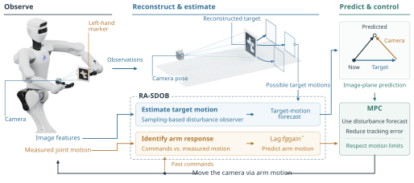

RA-SDOB
Image-Based Visual Servoing with a Response-Augmented Sampling-Based Disturbance Observer
Two estimates for visual servoing
Estimate image disturbances
Reconstruct the camera and target in an auxiliary environment. Combine random sampling with motion priors, weight candidates within each group, and use the group that best explains the image history to forecast disturbances.
Real-to-sim-to-real estimation ↗ 02 / EXECUTION RESPONSEIdentify the robot response
Compare past commands with measured joint motion to identify response lag and gain. Use this response estimate alongside the disturbance forecast to predict image motion for visual tracking.
Online response identification ↗How RA-SDOB works
Select a step or play the full explanation.
Spatial consistency · Can one rigid motion explain all four corners?Drag or use arrow keys to rotate
Priors suggest possible motionsSelect a stage or scrub the timeline

Interactive simulation
Corner tracking error
What does this simulation model? ＋
Core estimation and control
SDOB samples image disturbances around its previous estimate and checks one-step image predictions against observations. Its weighting temperature adjusts between observations using the sum of unnormalized candidate weights. RA-SDOB reconstructs spatial motion, adds motion-prior groups and identifies the arm response. MPC uses the estimates to plan tracking under motion and visibility constraints.
Robot geometry, simplified simulation
The 3D view uses the paper’s Astribot S1 model. The computation assumes planar motion at fixed depth and orientation. Full robot dynamics, contact, occlusion and feature detection are omitted. Rendering is separate from estimation, and control optimization is simplified. This teaching demo does not replace the paper experiments.
Timing and visibility
Each run lasts 24 s with a 0.05 s time step. The target moves from the start. Charts show tracking error and disturbance estimates. Estimates are not clipped. Feature updates stop when the target leaves the field of view, and the interface displays a notice.
Estimation and tracking results
Paper experiments · mean ± std
Separate from the browser demonstration
Disturbance estimation across motions.
Constant-velocity and circular motions are tested at different speeds. Each observer keeps its settings across conditions. These simulations evaluate disturbance estimation without tracking control.
| Observer | 0.04 m/s | 0.07 m/s | 0.10 m/s |
|---|---|---|---|
| DOB · Gain 2 | 1.308 ± 0.019 | 2.695 ± 0.010 | 5.283 ± 0.026 |
| DOB · Gain 5 | 2.083 ± 0.066 | 2.116 ± 0.094 | 1.994 ± 0.105 |
| DOB · Gain 10 | 3.602 ± 0.114 | 3.623 ± 0.165 | 3.352 ± 0.192 |
| DOB · Gain 20 | 5.699 ± 0.187 | 5.717 ± 0.278 | 5.285 ± 0.332 |
| DOB · Gain 40 | 8.066 ± 0.279 | 8.073 ± 0.437 | 7.465 ± 0.530 |
| SDOB | 6.273 ± 0.414 | 6.420 ± 0.710 | 6.204 ± 0.537 |
| RA-SDOB | 1.402 ± 0.304 | 1.303 ± 0.179 | 1.374 ± 0.082 |
| Observer | 0.16 Hz | 0.28 Hz | 0.40 Hz |
|---|---|---|---|
| DOB · Gain 2 | 15.777 ± 0.013 | 40.071 ± 0.011 | 67.282 ± 0.011 |
| DOB · Gain 5 | 7.731 ± 0.018 | 21.829 ± 0.010 | 41.619 ± 0.018 |
| DOB · Gain 10 | 5.563 ± 0.060 | 13.189 ± 0.011 | 25.572 ± 0.026 |
| DOB · Gain 20 | 6.298 ± 0.143 | 9.634 ± 0.083 | 16.671 ± 0.062 |
| DOB · Gain 40 | 8.325 ± 0.233 | 9.652 ± 0.195 | 13.315 ± 0.152 |
| SDOB | 6.182 ± 0.108 | 6.865 ± 0.106 | 9.800 ± 0.216 |
| RA-SDOB | 1.996 ± 0.050 | 1.851 ± 0.143 | 1.787 ± 0.077 |
The lowest mean in each column is highlighted. Linear motion is scored over approximately the last 3.5, 1.5 and 0.75 s of the passes, in order of increasing speed, and circular motion over the final 16 s. RA-SDOB has the lowest mean in five of six conditions. DOB with gain 2 is slightly lower at 0.04 m/s. Linear speeds are rounded to two decimal places.
Real-robot tracking comparison.
Seven methods track a target moving in a circle on Astribot S1. The clips show separate trials aligned by elapsed time, from 4 to 24 s at normal speed.